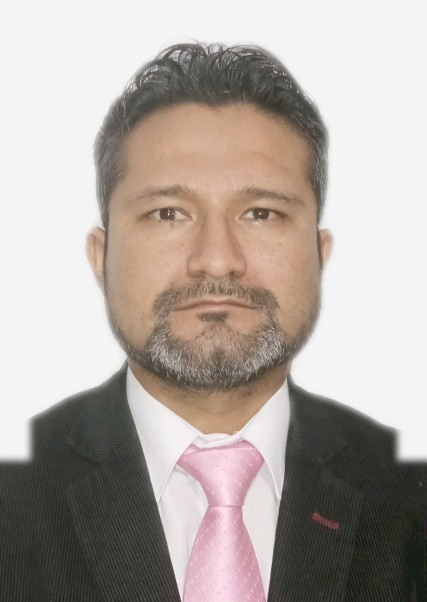
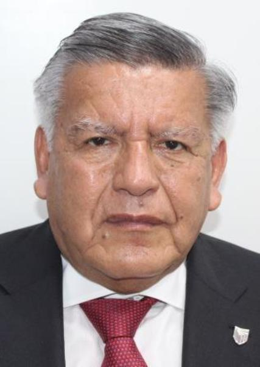
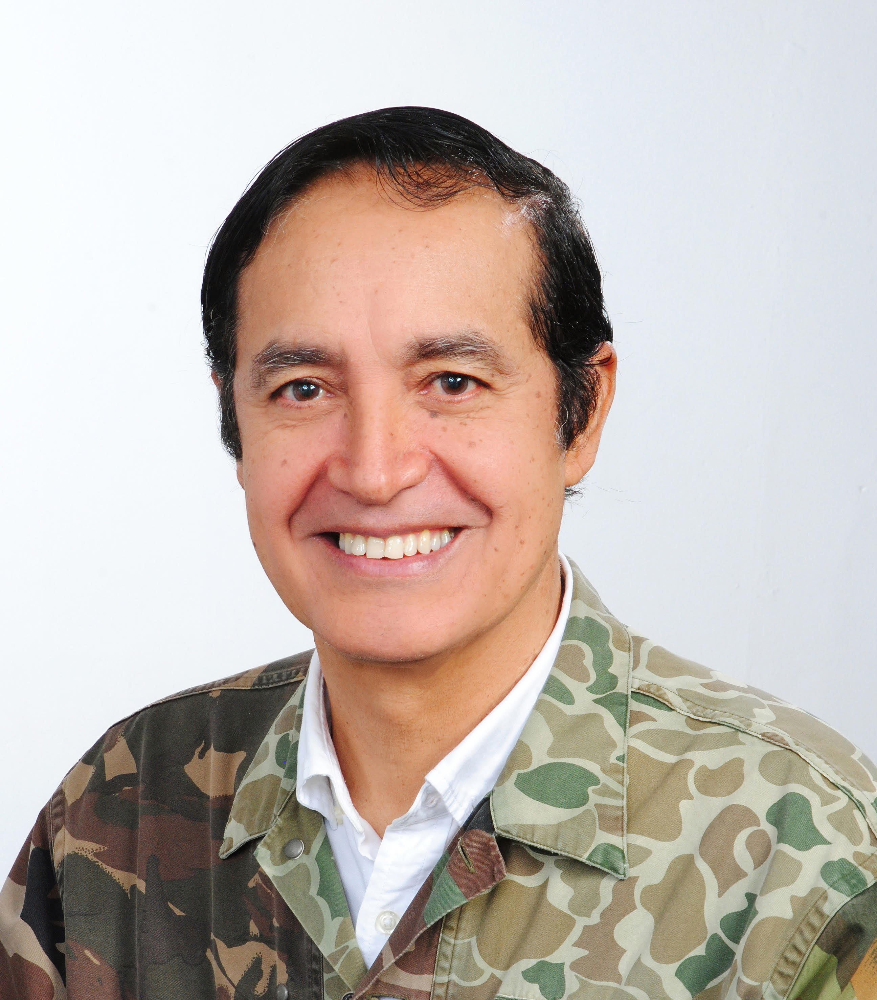
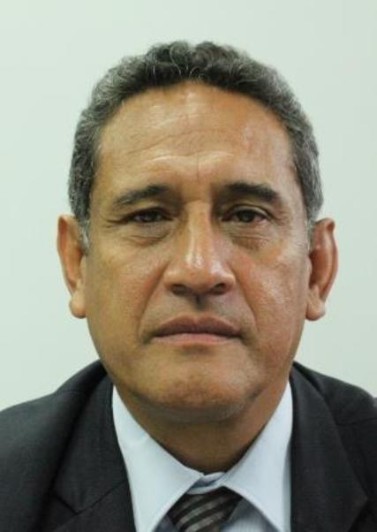
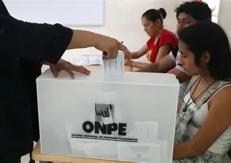
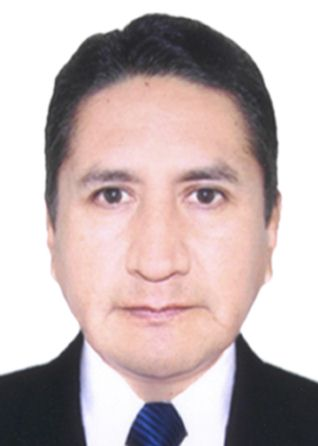
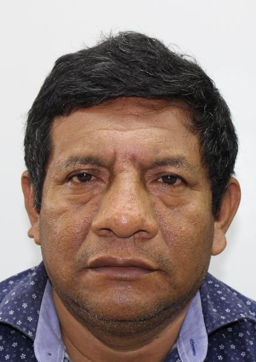
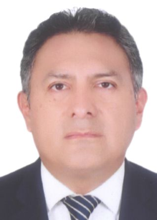
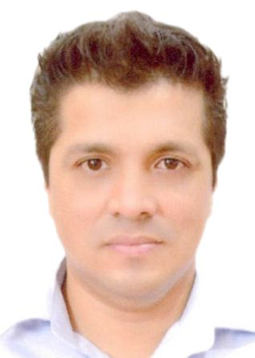
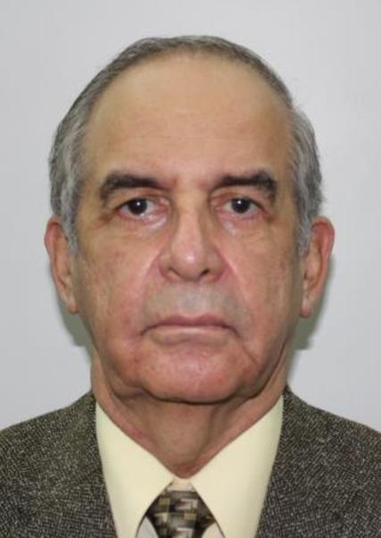

| ORDEN | NOMBRE | PARTIDO | FOTO | CV |
| 1 | PABLO ALFONSO LOPEZ CHAU NAVA | AHORA NACION | |
Ingeniero y académico con experiencia en gestión universitaria y proyectos educativos. |
| 2 | RONALD DARWIN ATENCIO SOTOMAYOR | ALIANZA ELECTORAL VENCEREMOS |  |
Profesional vinculado a movimientos sociales y participación política regional. |
| 3 | CESAR ACUÑA PERALTA | ALIANZA PARA EL PROGRESO |  |
Empresario y político, fundador de universidades y exgobernador regional. |
| 4 | JOSE DANIEL WILLIAMS ZAPATA | AVANZA PAIS - PARTIDO DE INTEGRACION SOCIAL | |
General retirado del Ejército, con experiencia en seguridad y defensa nacional. |
| 5 | ALVARO GONZALO PAZ DE LA BARRA FREIGEIRO | FE EN EL PERU | |
Abogado y exalcalde, con trayectoria en gestión pública y municipal. |
| 6 | KEIKO SOFIA FUJIMORI HIGUCHI | FUERZA POPULAR | |
Política, excongresista y excandidata presidencial, líder de Fuerza Popular. |
| 7 | FIORELLA GIANNINA MOLINELLI ARISTONDO | FUERZA Y LIBERTAD | |
Economista con experiencia en gestión pública y en el sector salud. |
| 8 | ROBERTO HELBERT SANCHEZ PALOMINO | JUNTOS POR EL PERU | |
Abogado y político con experiencia en el Congreso y gestión estatal. |
| 9 | RAFAEL JORGE BELAUNDE LLOSA | LIBERTAD POPULAR | |
Economista y empresario con trayectoria en inversiones y análisis económico. |
| 10 | PITTER ENRIQUE VALDERRAMA PEÑA | PARTIDO APRISTA PERUANO | |
Profesional ligado al aprismo con experiencia en organización política. |
| 11 | RICARDO PABLO BELMONT CASSINELLI | PARTIDO CIVICO OBRAS | |
Empresario y exalcalde de Lima, con trayectoria en medios de comunicación. |
| 12 | JORGE NIETO MONTESINOS | PARTIDO DEL BUEN GOBIERNO | |
Sociólogo y exministro, con experiencia en cultura y defensa. |
| 13 | CHARLIE CARRASCO SALAZAR | PARTIDO DEMOCRATA UNIDO PERU | |
Profesional con participación en política local y gestión pública. |
| 14 | ALEX GONZALES CASTILLO | PARTIDO DEMOCRATA VERDE |  |
Arquitecto y político, con experiencia en municipalidades. |
| 15 | ARMANDO JOAQUIN MASSE FERNANDEZ | PARTIDO DEMOCRATICO FEDERAL | |
Profesional con trayectoria en gestión administrativa y política. |
| 16 | GEORGE PATRICK FORSYTH SOMMER | PARTIDO DEMOCRATICO SOMOS PERU | |
Exfutbolista y exalcalde, con experiencia en gestión municipal. |
| 17 | LUIS FERNANDO OLIVERA VEGA | PARTIDO FRENTE DE LA ESPERANZA 2021 | |
Abogado y político con amplia trayectoria en el Congreso. |
| 18 | MESIAS ANTONIO GUEVARA AMASIFUEN | PARTIDO MORADO |  | Ingeniero y exgobernador regional, con experiencia en gestión pública. |
| 19 | CARLOS GONSALO ALVAREZ LOAYZA | PARTIDO PAIS PARA TODOS | |
Actor y político, con participación en campañas sociales. |
| 20 | HERBERT CALLER GUTIERREZ | PARTIDO PATRIOTICO DEL PERU |  |
Profesional con experiencia en organización política y social. |
| 21 | YONHY LESCANO ANCIETA | PARTIDO POLITICO COOPERACION POPULAR | |
Abogado y excongresista con larga trayectoria política. |
| 22 | WOLFGANG MARIO GROZO COSTA | PARTIDO POLITICO INTEGRIDAD DEMOCRATICA | |
Profesional con participación en política y gestión organizacional. |
| 23 | VLADIMIR ROY CERRON ROJAS | PARTIDO POLITICO NACIONAL PERU LIBRE |  |
Médico y político, exgobernador regional y líder partidario. |
| 24 | FRANCISCO ERNESTO DIEZ-CANSECO TÁVARA | PARTIDO POLITICO PERU ACCION | |
Político con experiencia en el Congreso y en gestión pública. |
| 25 | MARIO ENRIQUE VIZCARRA CORNEJO | PARTIDO POLITICO PERU PRIMERO | |
Ingeniero y expresidente del Perú, con experiencia en gestión pública. |
| 26 | WALTER GILMER CHIRINOS PURIZAGA | PARTIDO POLITICO PRIN |  |
Profesional con trayectoria en política regional y gestión social. |
| 27 | ALFONSO CARLOS ESPA Y GARCES-ALVEAR | PARTIDO SICREO | |
Profesional con experiencia en administración y participación política. |
| 28 | CARLOS ERNESTO JAICO CARRANZA | PERU MODERNO |  |
Abogado y político, con experiencia en asesoría gubernamental. |
| 29 | JOSE LEON LUNA GALVEZ | PODEMOS PERU | |
Empresario y político, vinculado a educación privada. |
| 30 | MARIA SOLEDAD PEREZ TELLO DE RODRIGUEZ | PRIMERO LA GENTE - COMUNIDAD, ECOLOGIA, LIBERTAD Y PROGRESO | |
Abogada y exministra de Justicia, con experiencia en derechos humanos. |
| 31 | PAUL DAVIS JAIMES BLANCO | PROGRESEMOS |  |
Profesional con participación en política emergente. |
| 32 | RAFAEL BERNARDO LOPEZ ALIAGA CAZORLA | RENOVACION POPULAR | |
Empresario y político, actual alcalde de Lima. |
| 33 | ANTONIO ORTIZ VILLANO | SALVEMOS AL PERU | |
Profesional con actividad en movimientos sociales y políticos. |
| 34 | ROSARIO DEL PILAR FERNANDEZ BAZAN | UN CAMINO DIFERENTE | |
Abogada y exministra, con experiencia en derecho constitucional. |
| 35 | ROBERTO ENRIQUE CHIABRA LEON | UNIDAD NACIONAL |  |
General retirado y político, con experiencia en defensa y seguridad. |